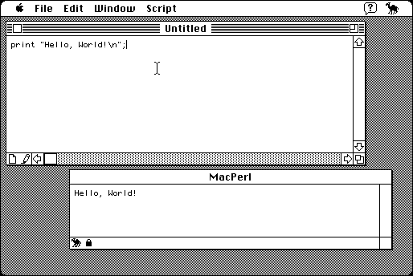

Download
macperl4.13.zip (676K) MacPerl 4.1.3 repackaged into a zipped hfs disk image and checksum file. The disk image can be mounted with Mini vMac.
macperl4.13.sit.hqx (942K) MacPerl 4.1.3 in the original format.
copyright: Matthias Neeracher, Tim Endres, Larry Wall, and others.
mod date: May 4, 1994
license: Perl Artistic License
“Perl for the Mac”. Requires System 7. Source code is available.

Download Source
macperl4.13src.zip (610K) MacPerl 4.1.3 source repackaged into a zipped hfs disk image and checksum file. The disk image can be mounted with Mini vMac.
macperl4.13src.sit.hqx (901K) MacPerl 4.1.3 source in the original format.
If you find these downloads useful, please consider helping the Gryphel Project, which hosts them.
Here are the md5 checksums for the downloads, signed with Gryphel Key 5:
--------- GRY SIGNED TEXT --------- fa9af1d657774ab4bade0e61dabf1f48 macperl4.13.zip ef53ea49e8642ee2711a5dfa14f424c6 macperl4.13.sit.hqx 2cce64e4caf8017f924d3bd7d3739974 macperl4.13src.zip f95d523b485dc03204763bf71b4244fb macperl4.13src.sit.hqx ------- BEGIN GRY SIGNATURE ------- Gry/4Xa8CFcUzxdN/JE4px8WM/E63o/dsvLs5n3KyeYmtuKKZ/Nw57XnBkRNOEk3 jK0l4xpNudN1+iFmrZWtVTvlPWGGS8EO2mdIAdDWdcAFaLnrbTgKNETBh6unPrJ9 bd9jJAlo7IDoEfGXSyVAVTefMZL7ki8iTysg/da5WqfIF2WcZBl/Hm6I1Nkio8wU -------- END GRY SIGNATURE --------